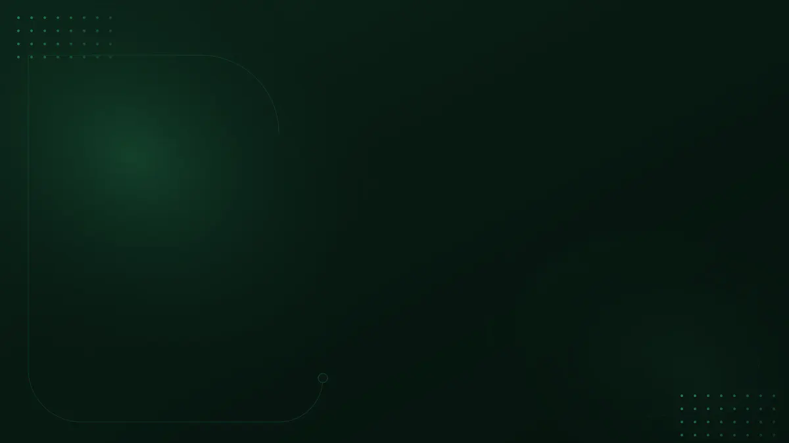
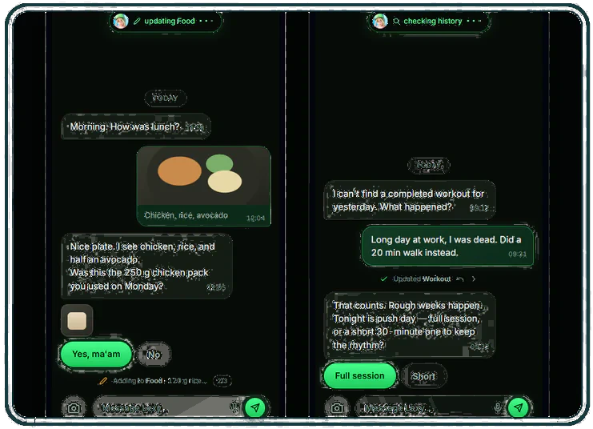
Mobile · Fitness & AIIn dev
CoachLexy
Tell Lexy what happened. It handles the tracking.
CoachLexy lets people log meals, workouts and progress by typing, speaking or sending a photo. Lexy asks follow-up questions, saves confirmed answers to an auditable history and suggests the next useful action. Every model-driven change passes through validated tools, so the conversation stays flexible without giving the model unchecked access to the data.
ExpoReact NativeTypeScriptSQLite
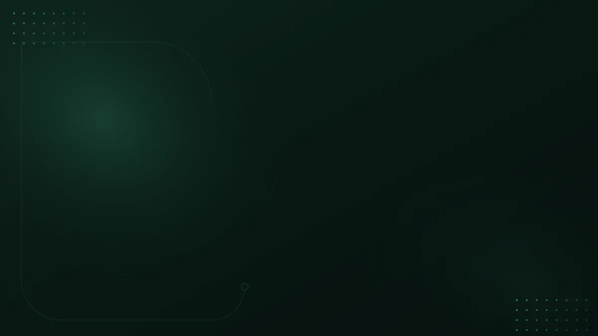
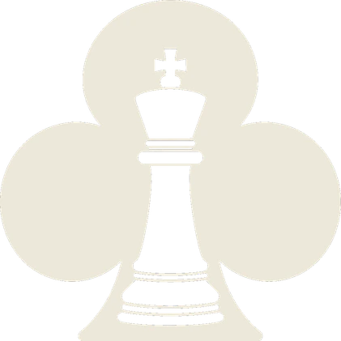
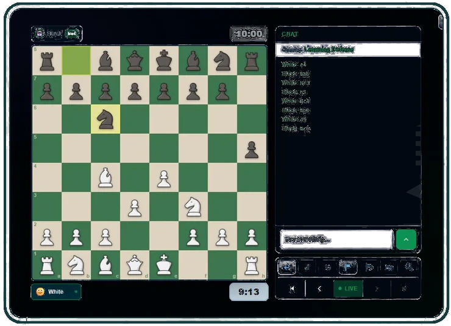
Web app · GamePrototype
Tableverse
One account, one lobby, every table game.
Tableverse puts eight networked table games in one lobby, including Chess with Stockfish, Shogi, Jass, Blackjack and an original Uno-like game. A custom WebSocket relay keeps play in sync. XP and Glicko-2 ratings carry across games, while hidden-information games use server-controlled shuffles. The front end runs without a build step.
ReactWebSocketSupabaseStockfish
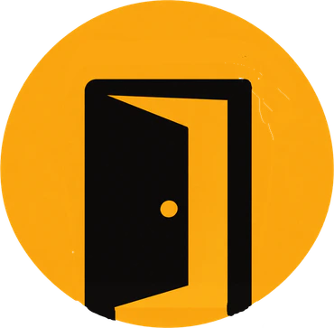
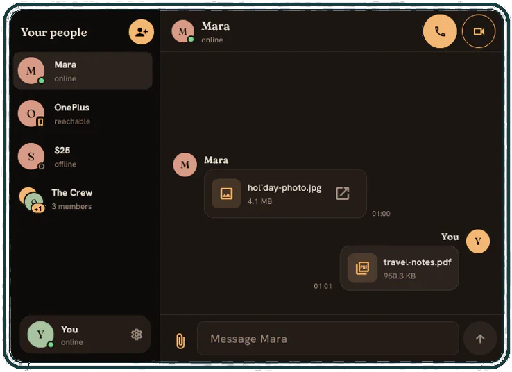
Desktop & mobileBeta
Syb-L
Private calls, files and screen sharing without a central server.
Syb-L handles voice calls, video, screen sharing and file transfers without rented servers. Nobody can interrupt a session unless they are invited. It uses Jami's P2P core and end-to-end encrypted media, with a quiet Flutter interface connected to native code on Android, Windows and iOS.
FlutterDartC++ / libjamiP2P · E2E
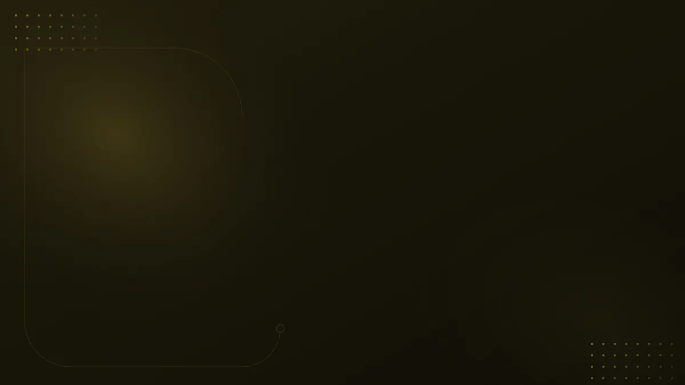
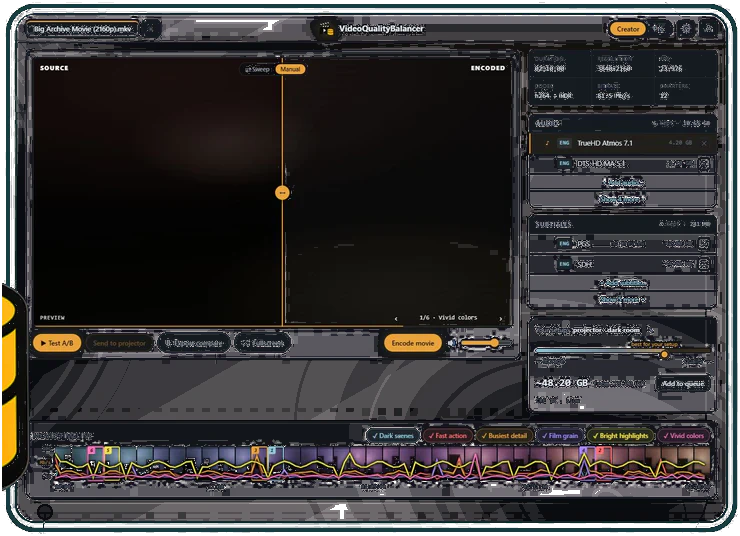
Desktop · MediaPrototype
VideoQualityBalancer
Shrink huge video archives without visibly hurting quality.
Drop in a large video and VideoQualityBalancer selects representative average, peak and darkest scenes for quick x265 tests. You can compare each result with the source before starting the full encode. The final pass keeps every audio track, subtitle and chapter stream. Its tested TypeScript core runs the local FFmpeg pipeline. A Pro inspector shows the generated command.
TypeScriptReactFFmpeg / x265Tauri
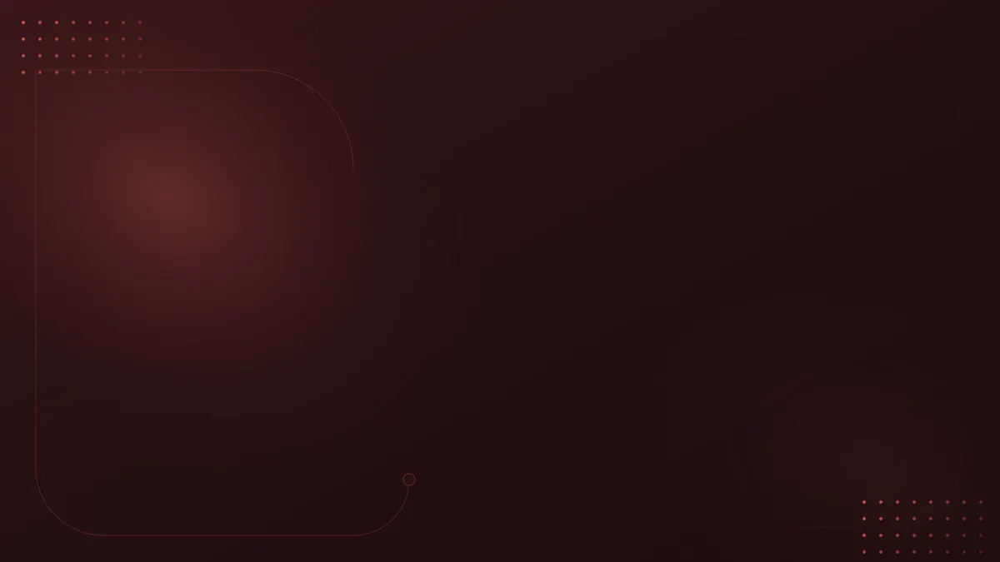
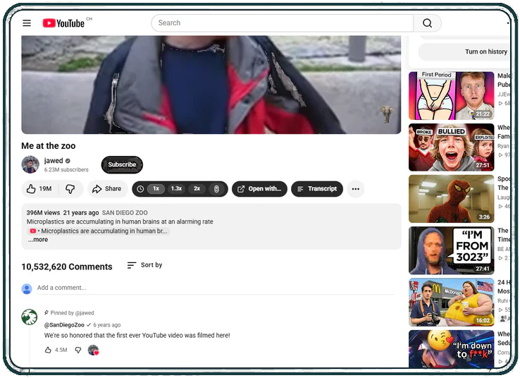
Browser extensionLive
Crazy Enhancer for YouTube
The YouTube controls you keep reaching for.
Crazy Enhancer keeps YouTube from overriding useful settings and adds a few controls of its own. Playback speed stays where you set it, transcripts copy in one click, and music can switch back to normal speed automatically. The MV3 extension has no dependencies or tracking. It is live on Firefox Add-ons, and its Chrome port has been tested in Chromium.
JavaScriptWebExtensions MV3FirefoxChrome
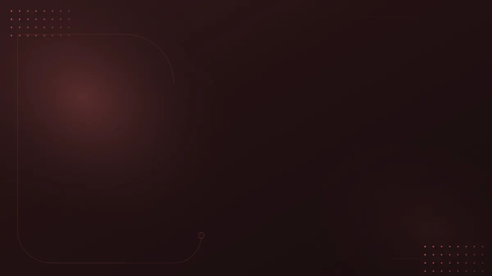
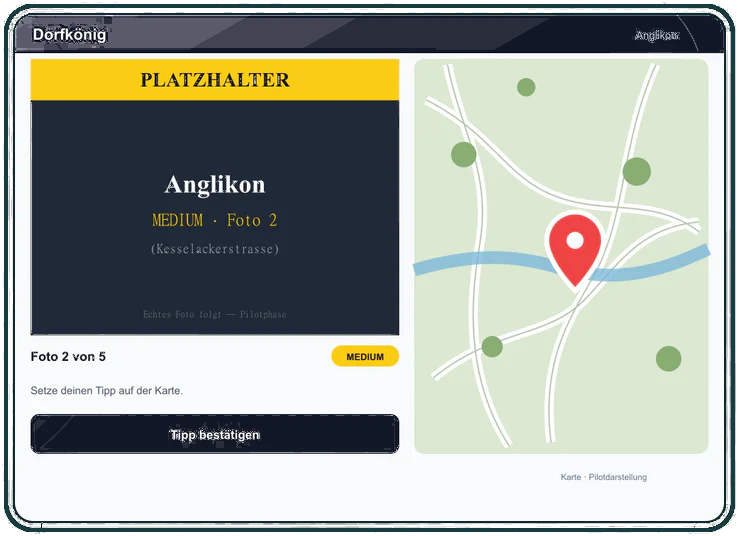
Web app · GameIn dev
Dorfkönig
A GeoGuessr-style game, one Swiss village at a time.
Dorfkönig turns real photos of Swiss villages, including footpaths locals recognize, into a location game. Players drop a pin on a swisstopo map and climb leaderboards that run from the village level to all of Switzerland. Verified locals can claim their town's crown. The server handles anti-cheat checks, and the game supports five languages, including Romansh.
Next.jsReact 19SupabaseMapLibreTypeScript
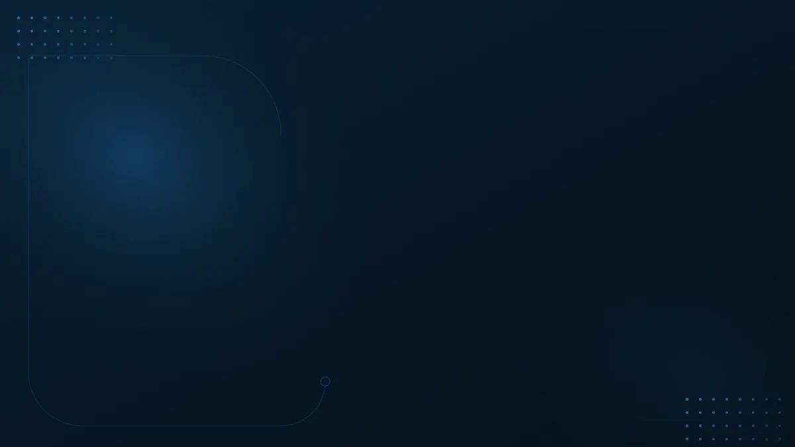
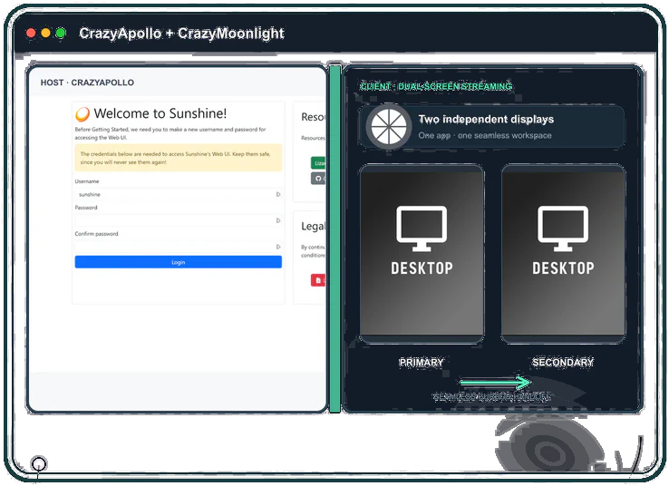
Desktop · SystemsIn dev
Apollo Dual-Screen
Two remote desktops, one window, one seamless cursor.
Apollo Dual-Screen puts two host displays side by side inside one Moonlight window. The cursor crosses between them as if they were connected to the same machine. A parent coordinator starts two streaming sessions and places them in one Qt window with Win32 SetParent. The protocol library remains unchanged.
C++Qt 6Win32 APIFFmpeg
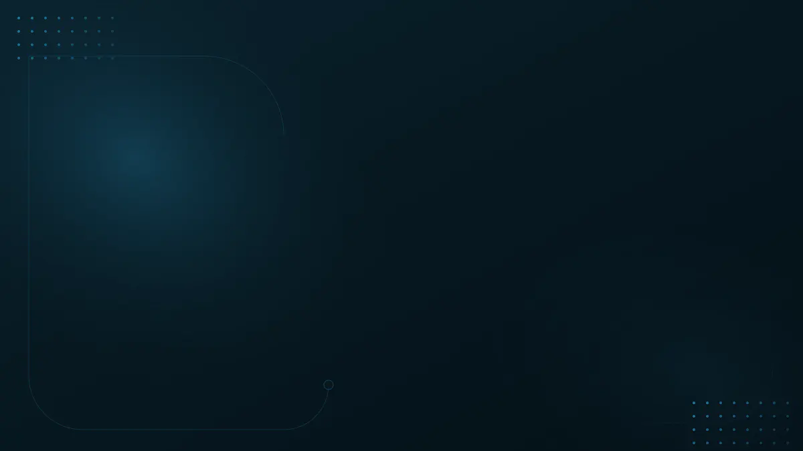
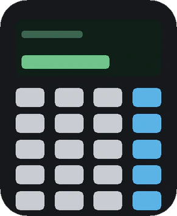
Cross-platform appBeta
Axiom Calculator Platform
A TI-30X Pro calculator for web, desktop and Android.
Axiom recreates the TI-30X Pro MultiView, including its MathPrint two-dimensional input. One shared offline engine runs on the web, as an installable PWA, in a Tauri desktop app and on native Android. A tokenizer, parser and formatter handle the calculations, backed by 336 tests derived from the calculator's guidebook. It runs offline and has no external dependencies.
Vanilla JSTauriPWAAndroid
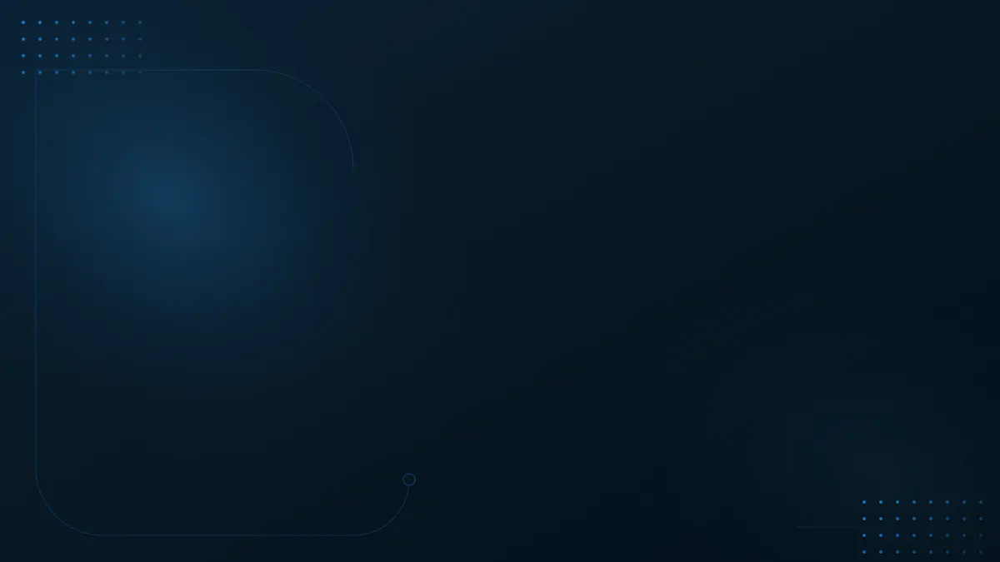
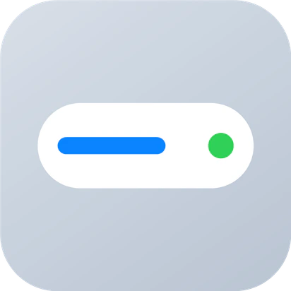
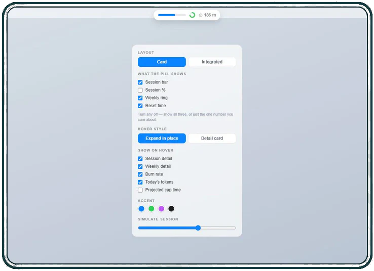
Desktop · Dev toolBeta
Token Measurer
A featherweight live usage meter for Claude Code.
Token Measurer reads the local logs Claude Code already writes and shows how much of the rolling and weekly limits remain. It makes no API calls and costs nothing to run. A small pill sits at the top of the screen, backed by a tray chart that drains from green to red. Move the pointer toward the overlay and it fades away and stops catching clicks. It runs on Tauri 2 rather than Electron and is about 5 MB.
RustTauri 2Win32WebView2
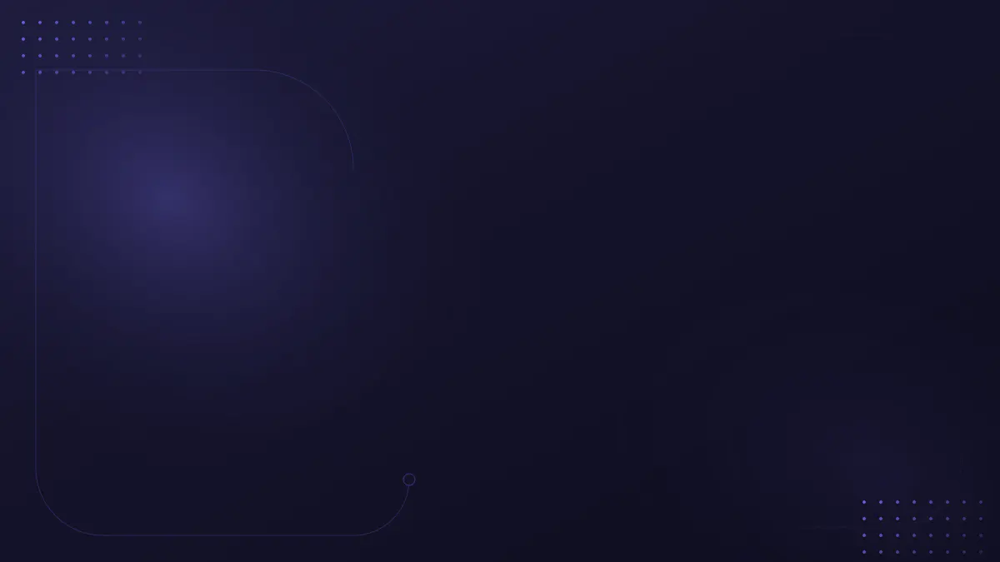
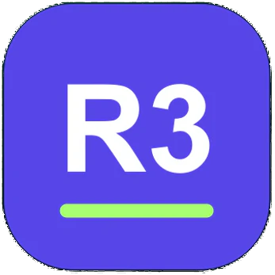
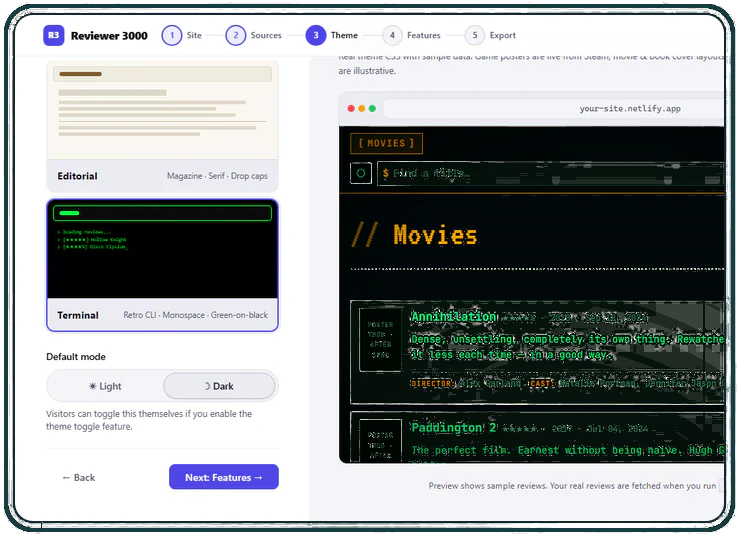
Developer toolBeta
Reviewer 3000
Your film, book and game reviews on one fast site.
Reviewer 3000 collects reviews from Letterboxd, Goodreads and Steam in a fast static site. Configure it once, choose from three themes and deploy it wherever you like. It can publish RSS and JSON feeds or export data for AI tools. The public site is plain HTML with vanilla ES modules, while the managed hosting backend uses SQLite and Node's built-in modules.
Node.jsVanilla JSZero-depSQLite
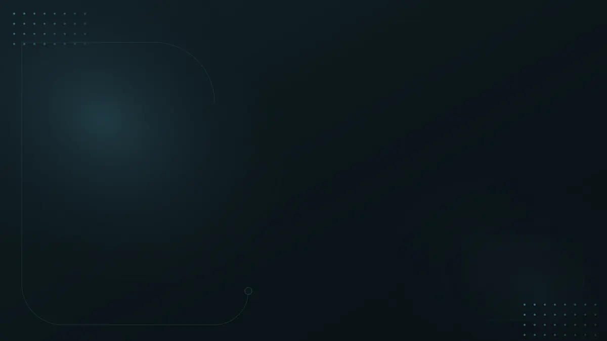
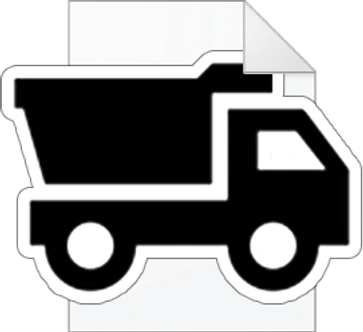
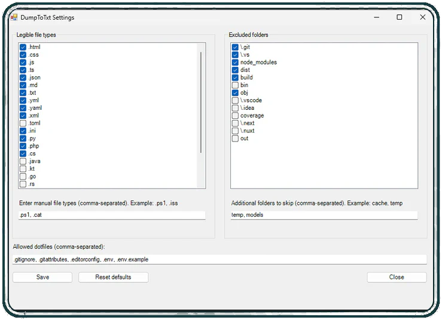
Desktop · Dev toolBeta
DumpToTxt
Pack any folder into one AI-ready text file.
DumpToTxt turns a folder into one text file from the Explorer right-click menu. The output includes a filtered file tree and the selected file contents, with no installer required. Its packing engine understands .gitignore rules, counts tokens, scans for secrets with 14 checks and supports five output formats. The current C# and .NET 8 rewrite passes all 132 tests.
C#.NET 8WinFormsxUnit
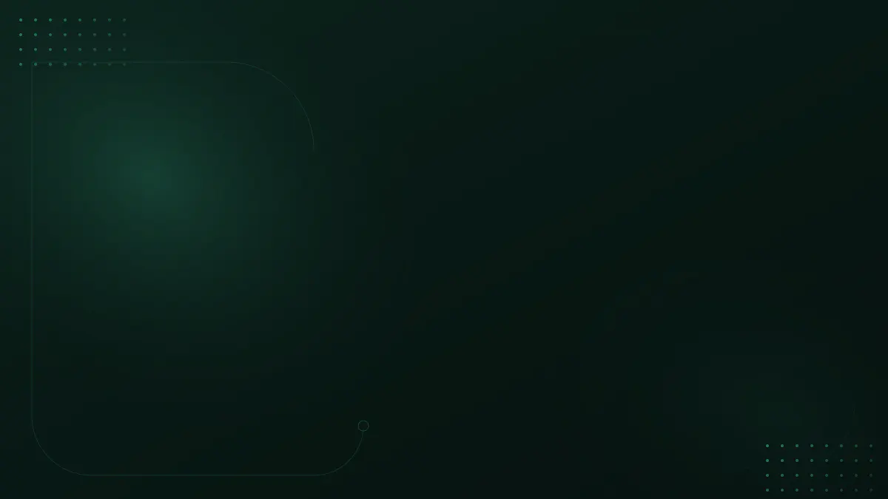
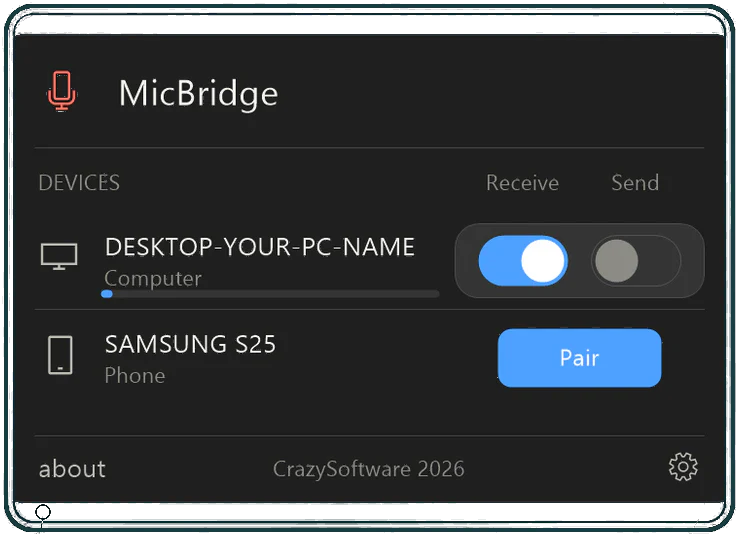
Desktop · SystemsBeta
MicBridge
Use any PC's microphone as a recording device on another PC.
MicBridge sends a microphone across the local network and exposes it on another PC as a normal recording device for Discord, OBS or games. PCs find each other by name. It captures audio with WASAPI, compresses it with Opus and sends it over UDP with jitter buffering and packet-loss concealment. The receiving side needs no installer.
C++17WASAPIOpusUDP
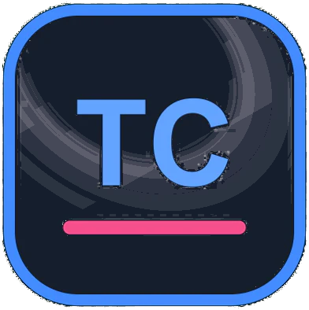
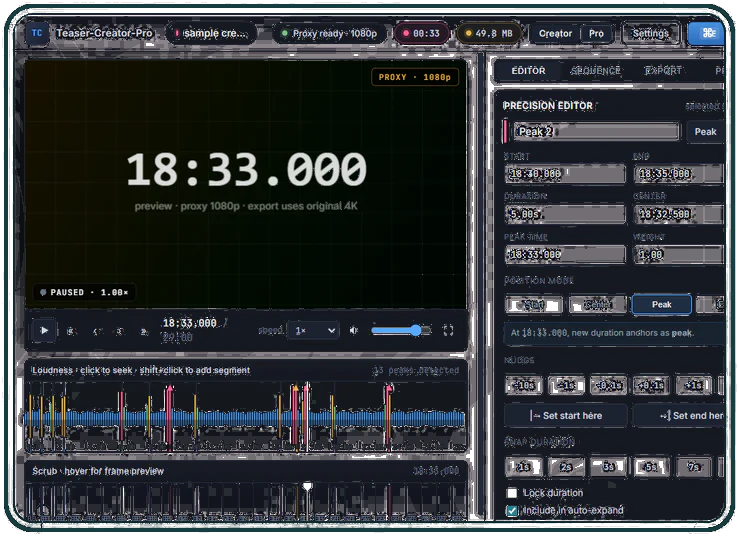
Desktop · MediaPrototype
ProTeaser Studio
Turn long videos into sharp teaser reels.
ProTeaser Studio turns long recordings into short highlight reels on your own machine. Use the loudness waveform to find moments, arrange the clips and apply a template. The exporter works within a chosen duration, file size and resolution budget, then generates the FFmpeg command. The same React core runs in the browser, Tauri and Node through separate adapters. The tested domain engine stays separate from all three runtimes.
ReactTauriRustFFmpeg
Web appIn dev
Portica
Turn career material into a site you actually own.
Portica turns CVs, profile text and screenshots into a personal website. Its guided process asks AI to propose facts from that material, but nothing becomes copy until the user approves it. You can switch between eight templates for different professions without losing work. When the site is ready, Portica exports it as a free single HTML file that does not depend on Portica hosting.
ReactTypeScriptViteSupabase
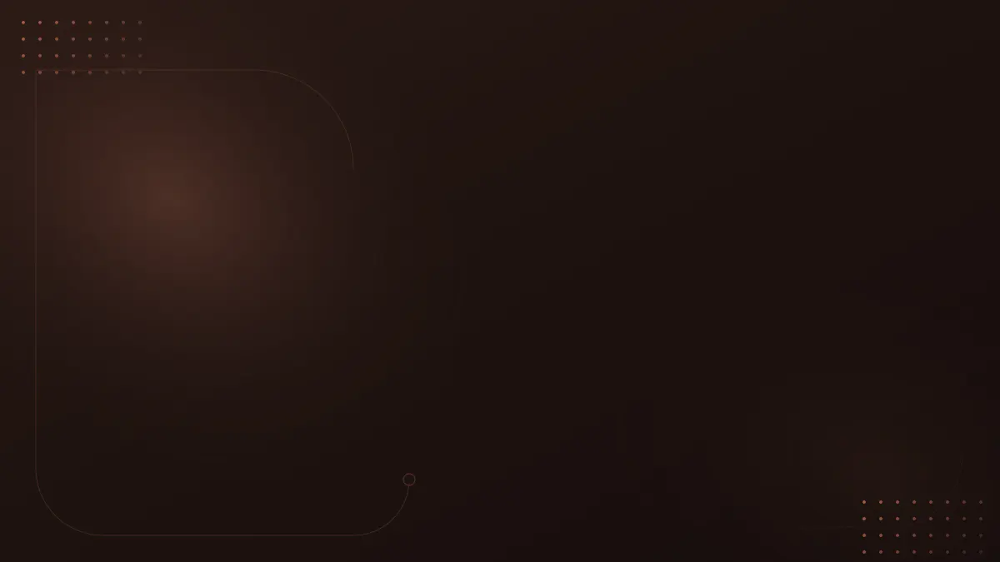
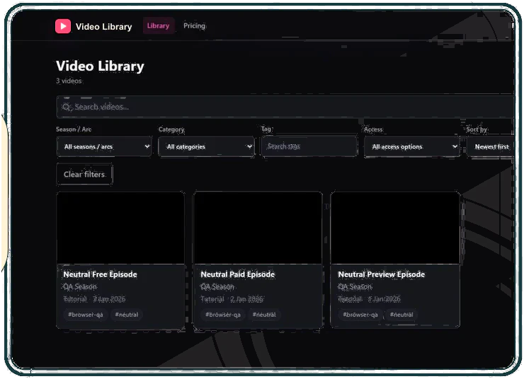
Web platform · MediaIn dev
Custom Video Platform
A video platform with its own player and access rules.
The platform combines a custom video player with a creator hub, user accounts, a catalogue and an administration area that keeps an audit trail. Its TypeScript backend handles identity, regional policies, entitlements and media access. SvelteKit renders the interface based on those decisions.
TypeScriptSvelteKitExpressPostgreSQL
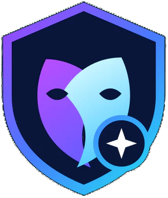
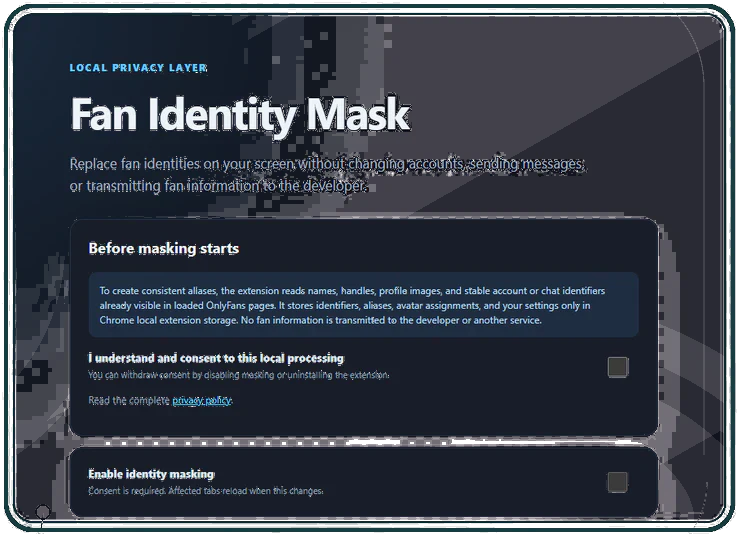
Browser extension · Creator toolBeta
Creator Workflow Extension
Private browser tools that take repetition out of creator work.
The MV3 extension handles repetitive publishing tasks across supported platforms while keeping audience identities on the user's device. Every tool is optional and previews its changes before anything happens. Actions that modify data require confirmation. Profiles and logs stay in browser storage instead of being sent to a developer-run server.
JavaScriptWebExtensions MV3ChromeLocal-first
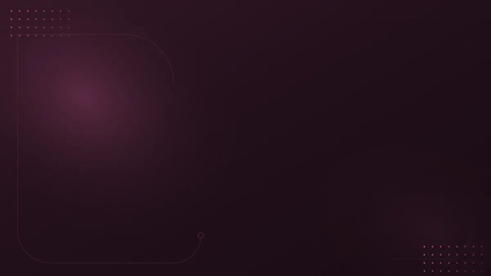
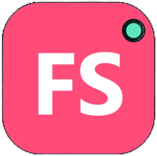
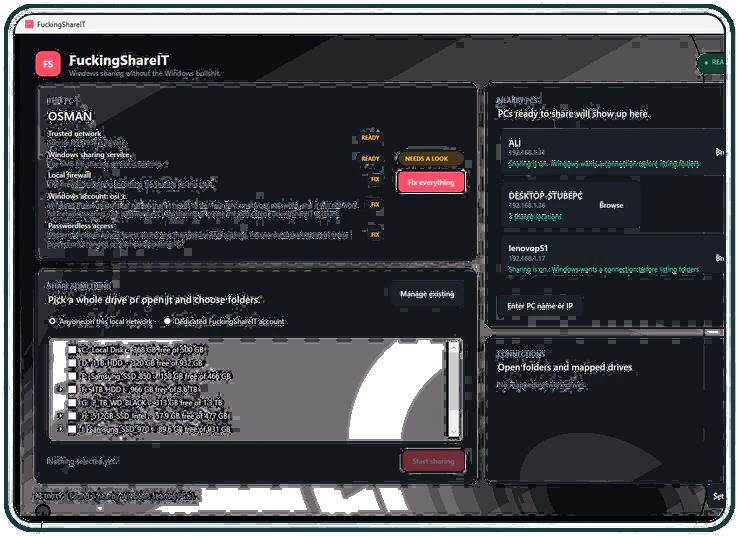
Desktop · SystemsPrototype
FuckingShareIT
Windows file sharing without the Windows maze.
FuckingShareIT guides people through Windows LAN sharing without hiding what it changes. It brings SMB accounts, permissions, firewall rules and credential conflicts into one reversible flow. The app can prepare a join tool for the next PC, find nearby hosts and map drives. It can also restore the Windows settings it changed and explains the security trade-offs along the way.
C#.NET 4.8WinFormsPowerShell
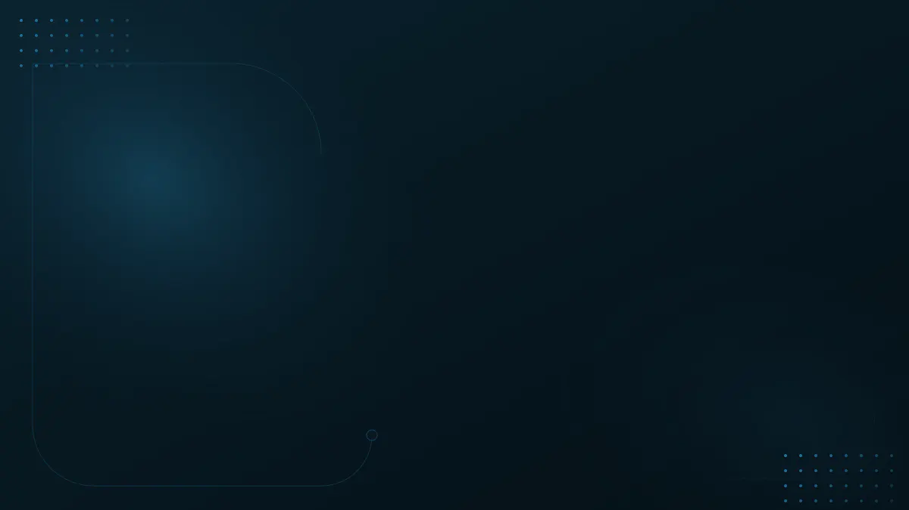
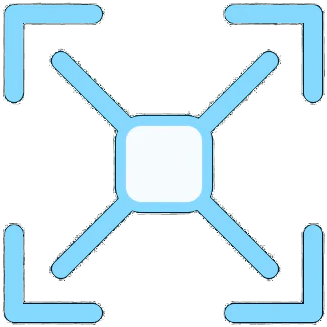
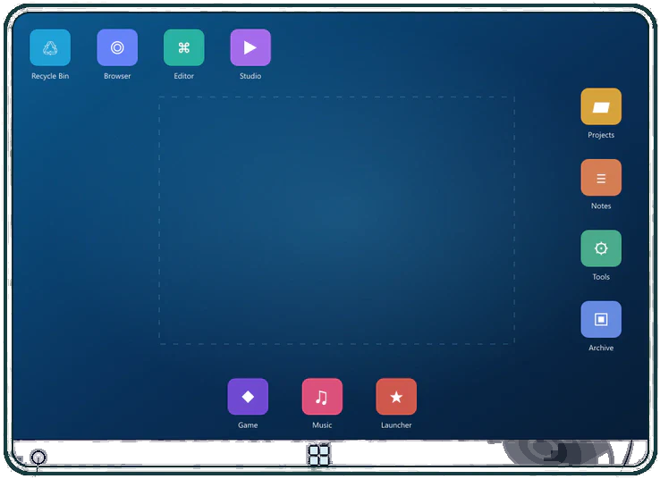
Windows utilityBeta
Desktop Edge Arranger
Move desktop icons to the edges and keep the center clear.
Desktop Edge Arranger classifies desktop icons and moves them around the screen's perimeter in one pass. It changes only the icon coordinates that Explorer uses, never the underlying files. Before moving anything, it checks the available space and possible collisions, then creates a backup that can restore the previous layout.
PowerShell 5.1Windows ShellExplorer APISafety-first